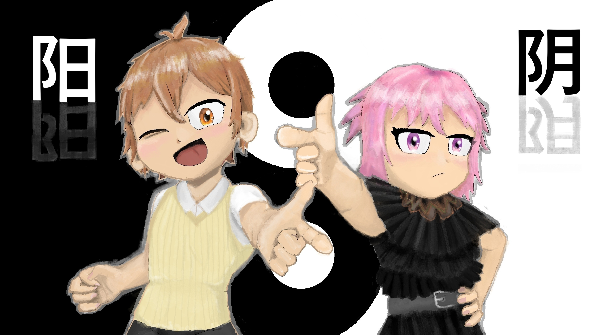
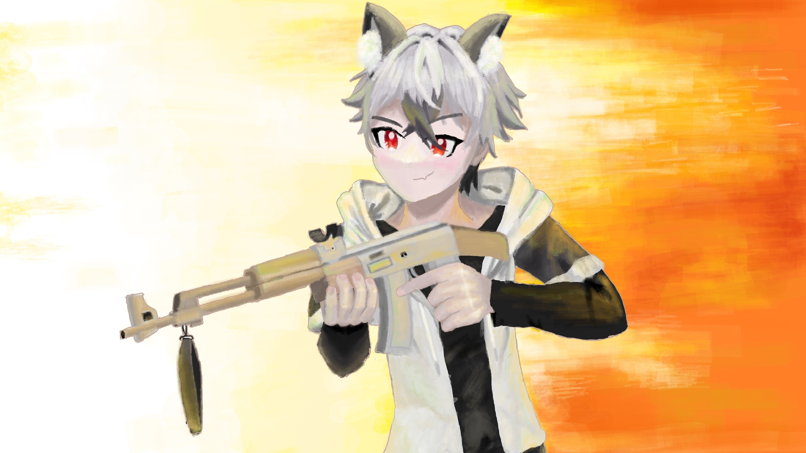

On September 2024, I joined a dedicated major association organization for Informatics called PUMA (President University Major Association). During my period, I became a member in Students Academic and Competition division. In there, I learned about time-management, bearing responsibility for a major event, and effective communication with others.
Additionally, I have been part of KTOM (Kontes Terbuka Olimpiade Matematika, the largest olympiad mathematics community in Indonesia) since June 2025 where I become a committee in QC and Jury Division. On February 2026, I was given trust by the former head division of jury to take over the position.
Currently, I am a project manager of a project named "SecureGate" as per 17th June 2026, a dedicated application for company targeted for safety of its visitor and contractor as a form of compliance with UU PDP. Domain of the dummy website will be updated soon.